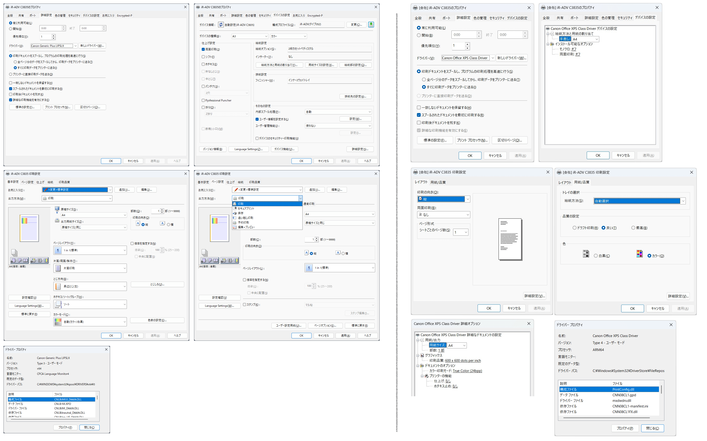

キヤノン iR-ADV C3835
2026-02-07 現在
結果
メーカーのセットアップは Windows 11 on Arm には未対応のようです:
Generic Plus LIPSLX Printer Driver Ver.3.31（64bit）のダウンロードページにて・ARM版Windows 11は非対応です。の記載がありますGeneric Plus LIPS4 Printer Driver Ver.3.32（64bit）のダウンロードページにて・ARM版Windows 11は非対応です。の記載がありますGeneric Plus PS3 Printer Driver Ver.3.31（64bit）のダウンロードページにて・ARM版Windows 11は非対応です。の記載がありますGeneric Plus PCL6 Printer Driver Ver.3.31（64bit）のダウンロードページにて・ARM版Windows 11は非対応です。の記載がありますPS3 プリンターPPDファイル Ver.5.40 for Windowsをダウンロードして展開しましたiR-ADV C3835/CNADVC3835X1.PPDが該当すると思われますしかし、 インストールに必要な INF ファイルは存在しませんでしたそのため、 プリンターのインストールはできませんでした
Windows 11 標準のプリンター追加機能で、印刷先を追加しました
確認した機能
LAN 接続での印刷
※ ほかの接続方法については、未確認です
プリンターのプロパティー
Canon Office XPS Class Driver です。
白黒 A4 縦 片面印刷 での印刷しか確認していません

テスト印刷したものを、スキャンしました
{kind=link}
～ 2026-02-06
未対応です。 ⇒ 印刷 (白黒 A4 縦 片面印刷) はできました
Generic Plus LIPSLX Printer Driver Ver.3.20（64bit） ダウンロードのページにて、未対応との表記がありました。
・ARM版Windows 11は非対応です。
但し、頑張ってプリンターの追加をすると Microsoft OpenXPS Class Driver 2 プリンターとしてセットアップができました。
印刷できる可能性はあります。 印刷テスト待ちです。
2025/08/05 追記。プリンターを追加し直すと Canon Office XPS Class Driver (WSD Port) として追加されました。印刷はできました。
x64 と ARM64 と両方のドライバーの画面の比較です:
Arm 環境では、社内ルールやコンプライアンス遵守に関連する機能がほとんど利用できないと思われます。
遵守が行き届かなくなる原因を作っているという意味では、大企業での Copilot+ PC (Arm CPU) 導入を敬遠する要因になりそうです。
メーカーによる Arm 対応ドライバーの開発に期待したいところです。